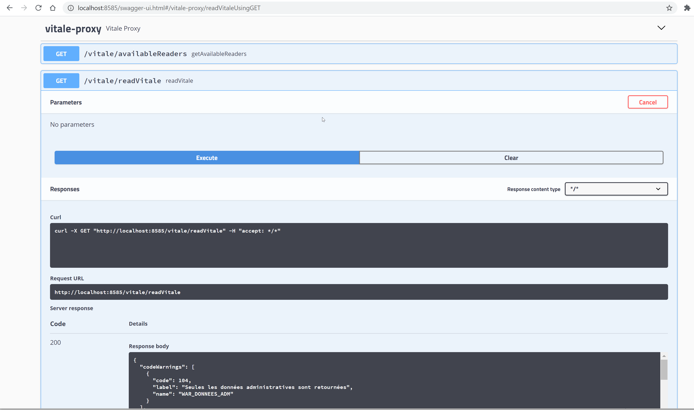

Vitale
Composant d’intégration de la carte vitale
Ceci est l’api carte vitale proposée par DEVCOOP afin de proposer un niveau d’abstraction suffisant pour un programme java d’accéder à la carte vitale.
Les documents de référence sont apilec-mp-001_lecv6.3x_V2.1.pdf et apilec-mf-001_lecv6.3x_V1.6.pdf
Implémentation
Le module carte-vitale-impl, fournit l’implémentation de la VitalFacade qui intègre l’API LectureVitale fournit par Sesam Vitale : PDT-INF-400-API_Lecture_Vitale_6.31.pdf
Exemple de code dans une application Spring Boot :
public class MonComposantVitale {
@Autowired
VitaleFacade vitale;
public void maMethode() {
final List<CardReaderInfo> availableReaders = vitale.getAvailableReaders().getCardReaders();
boolean selecteBeneficiaire = true;
vitale.readVitale(selectBeneficiaire);
}
}
Proxy REST
Le module carte-vitale-proxy, permet de fournit une facade REST à la VitaleFacade java.
L’accès au carte-vitale-proxy est indépendant de la technologie utilisée par l’intégrateur.
!include https://bitbucket.org/devbox-sante/plantuml/raw/current/themes/theme-devbox-sante.puml
node "Poste Client (Windows/Mac/Linux)" {
[FrontEnd intégrateur] as frontend
package "DevBox-Santé" DEVBOX_COLOR {
[DevBox-Santé Vitale API] as vitaleFacade VITALE_COLOR
}
[ApiVitale (SESAM-vitale)] as apiVitale
}
[BackEnd intégrateur] as backend
frontend -down-> vitaleFacade : REST "GET "/vitale/readVitale""
vitaleFacade <-down-> apiVitale : appel natif
frontend -right-> backend : REST
Exécution
Exemple Swagger :

Exemple CURL :
- Récupérer l’état des différents lecteurs de carte :
curl -X GET "http://localhost:8585/vitale/availableReaders" -H "accept: */*"
- Lire les données administratives de la carte vitale
curl -X GET "http://localhost:8585/vitale/readVitale" -H "accept: */*"
- Signer un fichier PDF :
curl -X POST "http://127.0.0.1:8484/cps/signPdf?location=Bordeaux&reason=Parceque" -H "accept: */*" -H "Content-Type: multipart/form-data" -F "multipart=@fichier.pdf;type=application/pdf"
Configuration
La carte-vitale-proxy est une application web Spring Boot, toutes les possibilités de spring-security sont donc disponibles.
Données disponibles en plus avec la CPS
Avec la carte CPS vous pouvez accéder aux données de santé, comme les exonérations du ticket modérateur (ETM) qui peuvent être liées par exemple à une ALD.
L’exonération du ticket modérateur peut également être accordée pour certaines prestations : Certains actes médicaux comme le diagnostic et le traitement de la stérilité ; Les actes effectués dans le cadre des campagnes de prévention mises en place par les Pouvoirs publics (dépistage du cancer du sein par exemple). C’est aussi le cas des soins liés à un accident du travail ou encore à une maladie professionnelle.
Versions
Note sur les différentes versions de la DevBox-Santé Carte Vitale